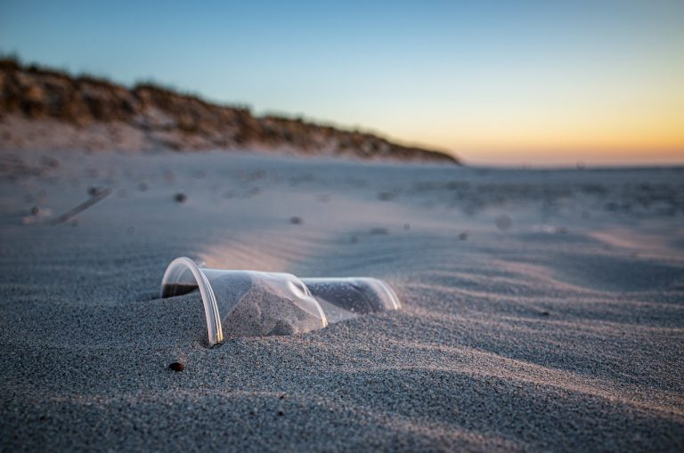

Sobre a Oceans 20
Uma iniciativa que visa reduzir a poluição marinha e combater diretamente contra os impactos causados no oceano feitos por nós mesmos.
Saiba Mais!Uma iniciativa que visa reduzir a poluição marinha e combater diretamente contra os impactos causados no oceano feitos por nós mesmos.
Saiba Mais!Nossa equipe se empenhou nos estudos de Arduíno R3 para criar um dispositivo que acoplasse um sensor ultrassônico, e um de temperatura. Captando assim dejetos que caiam no mar, e medindo a temperatura marítima.
Nosso projeto visa obter dados precisos que nosso dispositivo reconheça, e mande para nosso banco de dados, podendo assim mandar para empresas costeiras um alerta de que há submerso, algum "lixo que não era para se ter".
Reduzir a poluição marinha, e combater diretamente contra os impactos causados no oceano feitos por nós mesmos.

Nós temos o desejo de beneficiar empresas costeiras, que podem ser alertadas sobre a presença de lixo no mar, e assim poderem tomar medidas para a retirada do mesmo.
Com a utilização de nosso protótipo, podemos ajudar a reduzir a poluição que há nos oceanos, e combater diretamente contra os impactos causados no mar.
Nosso projeto visa obter dados precisos que nosso dispositivo reconheça, e mande para nosso banco de dados, podendo assim mandar para empresas costeiras um alerta de que há submerso, algum "lixo que não era para se ter ali".